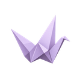

DRACULA / READING NOTES
What makes a welcome unsettling?
“Enter freely and of your own will!”A place for the ideas between the lines.

Origami READERSome stories are better after dark.
A free reading room, workspace, and audiobook studio. Listen with expressive local voices, or create your own narrator from a written description.
Version 0.1.0 beta 22.1 · Windows 10 and 11 · Release notes on GitHub ↗
Linux and macOS will be available in a later release.
This beta is not signed yet. See what setup installs and how to check it ↓
Every feature free. Supported by voluntary donations.
The night has only just begun.
TRY THE INTERACTIVE READER
The Count has invited you in. Press play, turn the pages, and try different paper styles. Explore a few pages of Dracula right here.
Press play, click a passage, or turn a page.
DRACULA / READING NOTES
“Enter freely and of your own will!”A place for the ideas between the lines.
AUDIOBOOK STUDIO
Try different included voices. Each sample introduces a different Origami feature; the Dracula excerpt is narrated by Alistair.
“I am Dracula; and I bid you welcome, Mr. Harker, to my house.”
From Bram Stoker’s Dracula, Chapter II. Narration generated locally with Origami’s approved Alistair voice. Page numbers refer to this excerpt.
WATCH THE STORY
How Origami began, and what it can do, in a short video.
The video plays from YouTube when you press play. Nothing is loaded from YouTube before that. Watch on YouTube ↗
YOUR IMAGINATION. YOUR NARRATOR.
You can make your own original voices in Origami. Describe the age, accent, texture, and character you imagine, then generate, listen, and keep your favourites.
A weathered storyteller. A velvet-voiced count. A companion for a long, dark night. Describe the narrator you imagine, then bring the voice to life.
Choose a starting point or write your own description.
Try takes, compare their character, and refine the idea.
Add the voices you love to your collection.
Explore a real generated example
These examples were made with Origami’s voice creator. Voice generation runs locally in the desktop app.
VOICES WORTH STAYING UP FOR
Twelve English examples and twelve French ones, from the 12 English and 20 French voices included in Origami. Each narrator introduces a different feature, so every voice test tells you something new.
Voice collections for more languages are in the works.
New feature introductions generated locally with approved Origami voices. The portraits are original generated illustrations of fictional narrators.
A LITTLE COMPANY AFTER DARK
A sleeping cat. A turning world. A fold of paper catching the light. Choose a bookmark to try beside the reader.
SIX INVITATIONS TO ANOTHER WORLD
Origami includes six starter books, available in 20 languages. Pick your language and start reading.
Book languages and voice collections are separate. English and French voice examples are available here; more voice languages are in development.
THE DOOR IS OPEN
Bring your books. Stay for a chapter. Or until dawn. Every feature is free.
Download for Windows ↓Version 0.1.0 beta 22.1 · Windows 10 and 11 · Release notes on GitHub ↗
Linux and macOS will be available in a later release.
No subscription required. Donate what you want.
If Windows says it does not recognize the app (this beta is not signed), choose More info, then Run anyway.
This warning can appear when Windows doesn’t recognize an app or its publisher. It does not, by itself, establish that the app contains malware. Do not turn off Windows security.